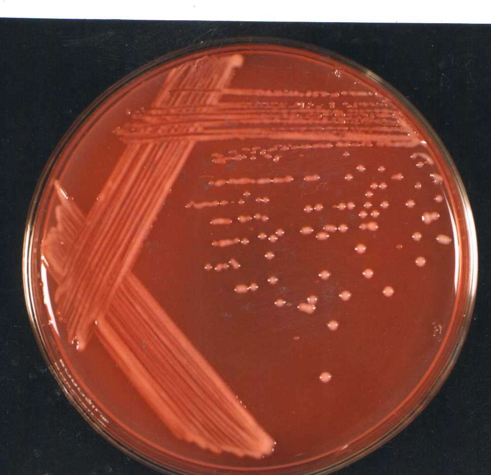
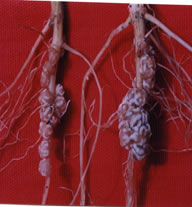
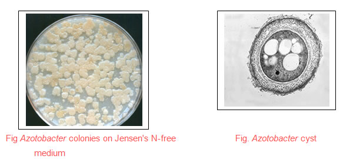
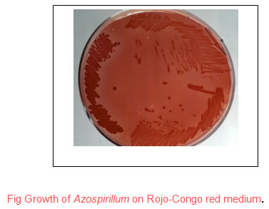
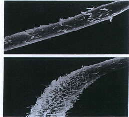
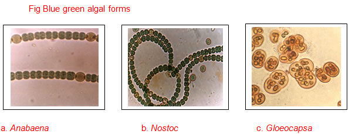
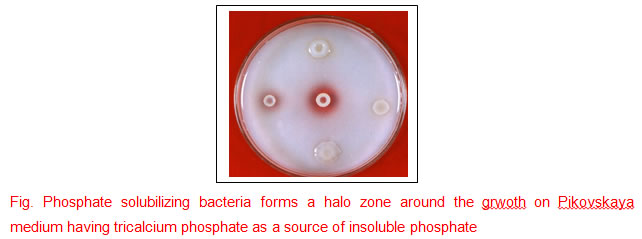
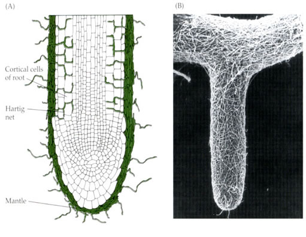
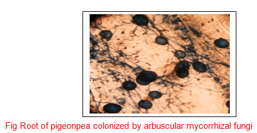
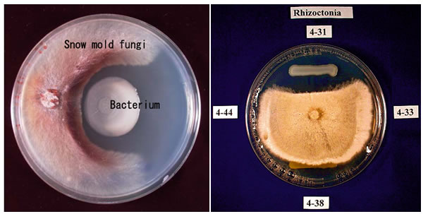

AMBE 101 :: Lecture 25 :: BENEFICIAL MICROORGANISMS IN AGRICULTURE

Microbes are an integral part of soil and contribute to soil and plant health. Microorganisms have the ability to fix atmospheric nitrogen, solubilize and mobilize phosphorus, produce antibiotics and disease suppressing molecules. Owing to these properties, they are used in agriculture as biofertilizers and biopesticides. They are also important in the treatment of solid waste and sewage. They clean up the environment by degradation of several pollutants like pesticides, hydrocarbons, dyes and paints. They also help in the enhanced recovery of oil and metals from low grade ores or aqueous streams.
Man is a host to variety of pathogenic bacteria, protozoa and viruses. They can cause various infectious and non-infectious diseases. In order to control the disease and its transmission, it is essential to isolate and identify the causal agent from blood, sputum, urine, stool or pus. Various cultural and molecular methods can be employed for identification of pathogen. Sterilization techniques, use of disinfectants and vaccination can help control transmission of disease.
Biofertilizers
Biofetilizers are the products containing living cells of different types of microorganisms that enrich the nutrient quality of soil. The main sources of biofertilizers are bacteria, fungi and cyanobacteria (blue green algae). Most biofertilizers belong to one of the following categories: nitrogen fixing, phosphate solubilizing and mobilizing, and plant growth promoting rhizobacteria. Some of the major biofertilizers and target crops are given in table 8.1. Nitrogen fixing biofertilizers fix atmospheric nitrogen into forms which are readily useable by plants. These include Rhizobium, Azospirillum, Azotobacter, blue green algae and Azolla. While Rhizobium requires symbiotic association with the root nodules of legumes to fix nitrogen, others can fix nitrogen independently. Phosphate solubilizing microorganisms secrete organic acids that enhance the uptake of phosphorus by plants by dissolving rock phosphate and tricalcium phosphate. Arbuscular mycorrhizal fungi are the most common phosphorus mobilising types that are omnipresent. A group of bacteria that enhance the growth of plant through nitrogen fixation, phosphorus solubilization or production of plant growth promoting metabolites are known as Plant Growth Promoting Rhizobacteria (PGPR). Many PGPR strains have a potential to be used as microbial inoculants to enhance crop productivity.
Major biofertilisers and target crops
Biofertiliser |
Target crop |
Rhizobium |
Leguminous crops |
Azotobacter |
Wheat, maize, cotton, mustard and vegetables (Potato, onion, tomato, brinjal and others) |
Azospirillum |
Cereal crops like wheat, maize, millets, sorghum, barley; and sugarcane. |
Blue green algae (BGA) |
Rice |
Azolla |
Rice |
Phosphate solubilizing microorganisms |
All |
Arbuscular mycorrhiza |
Nursery raised crops and orchard trees |
Plant growth promoting rhizobacteria |
All |
The growth in agricultural production in the last three decades has been accompanied by a sharp increase in the use of chemical fertilizers, causing serious concern. Foremost among these concerns is the effect of excessive fertilizers on the quality of soil and ground water. The use of environmental friendly biofertilizers can cut down the use of chemical fertilizers. Biofertilizers have definite advantage over chemical fertilizers. It is economical to use biofertilizers as they are a cheap source of nutrients when compared to chemical fertilizers. Biofertilisers in addition to nitrogen and phosphorus, also provides certain growth promoting substances like hormones, vitamins, and amino acids that improves the plant health and vigour. Continuous use of chemical fertilisers adversely affects the soil structure whereas biofertilizers when applied to soil improve the soil structure. The chemical fertilizers are toxic at higher doses where as biofertilizers have no toxic effects.
Nitrogen fixing bacteria
An atmosphere around us contains nearly 78% nitrogen that is in free form and is not utilized by the plants. Plants take up nitrogen in the form of ammonia or nitrate. Relatively small amount of ammonia is produced by lightning. Some ammonia also is produced industrially by the Haber-Bosch process, using an iron-based catalyst, very high pressures and fairly high temperature. But the major conversion of N2 into ammonia by the action of enzyme nitrogenase, and thence into proteins, is achieved by microorganisms in the process called nitrogen fixation (or dinitrogen fixation).
All the nitrogen-fixing organisms are prokaryotes. There are different groups of nitrogen fixing microorganisms (diazotrophs) present in the nature. These are broadly divided into three categories, viz.,
- Symbiotic microorganism
- Asymbiotic or free living
- Associative Symbiosis
Examples of nitrogen fixing microorganisms for each category are given in table
Some examples of nitrogen fixing bacteria belonging to different categories.
Category |
Examples |
Symbiotic |
Rhizobium- legume symbiosis |
Free living |
|
1. Aerobic |
Azotobacter |
2. Facultative |
Klebsiella pneumoniae |
3. Anaerobic |
Clostridium |
Associative |
Azospirillum |
The list of nitogen fixing bacteria is long but here we will discuss some of the important types of biofertilisers that can be considered for agrobased industries.
RHIZOBIUM INOCULANT
The bacteria of the genera Rhizobium, Bradyrhizobium, Mesorhizobium, Sinorhizobium and Azorhizobium collectively known as rhizobia, in symbiotic association with leguminous plants reduce atmospheric nitrogen. The rhizobial colonies appear raised, wet, shining, translucent or opaque with smooth margin on yeast extract mannitol agar (YEMA) medium. The legume-rhizobia symbiosis culminates in the formation nitrogen fixing root or stem nodules. These unique structures are agronomically significant as they provide alternative to the use of energy-expensive ammonium fertilizer. Not all legumes fix nitrogen. Of the three segregate families of legumes, the capacity to form nodules appear to be absent from the majority of species of Caesalpiniaceae. All members of family Mimosaceae and Fabaceae show formation of nodules with rhizobia. It is believed that legume-Rhizobium symbiosis contributes atleast 70 million metric tons N per year. The amount of nitrogen fixed varies with the strain of Rhizobium, the plant species and environmental conditions.
|  |  |
| Fig Typical growth of Rhizobium on yeast mannitol agar medium with congo red |
Fig Root nodules formed by extract rhizobia on mungbean plant |
The taxonomy of root and stem nodulating bacteria is in a state of transition. The initial classification of these organisms based on plant infection into 7 cross inoculation groups has been abandoned after extensive criticism. A new system of classification was proposed by Jordan (1984) in Bergey's Manual of Systematic Bacteriology (Table ). He separated the root nodule bacteria into two genera, Rhizobium and Bradyrhizobium, based on data on numerical taxonomy, molecular characteristics and rate of growth on laboratory media. Fast growing strains were placed under genus Rhizobium whereas slow growing strains were placed in Bradyrhizobium. Since 1984, the classification has undergone lot of changes. Three additional genera, Mesorhizobium, Sinorhizobium and Azorhizobium have been recognised and many new species have been reported so far.
Rhizobium inoculation
Legume inoculation is a significant strategy for the manipulation of rhizobial microflora and improving crop productivity and soil fertility. However, in tropical soils where there is presence of adequate native rhizobia and high levels of mineral N, legume inoculation often fails. Thus there is an urgency to identify conditions where inoculation is needed. Different diagnostic measures to decide about inoculation have been suggested by various workers. Inoculation should be carried out if;
- population density of species-specific rhizobia is low,
- the same or symbiotically related legume is not grown in the area in the immediate past history
- waste-lands have to be reclaimed
- legume follows a non leguminous crop in a rotation
- soil is poor in mineral N (nitrate)
- soils are acidic, alkaline and saline.
Selection of rhizobial strains for inoculant production
A large-scale screening should be carried out to identify ideal inoculant strain for different legume crops. The criterion for selection may vary for particular soil types like acidic, sodic, saline, nitrate-rich or heavy metal contaminated. Following are some of the desirable characters for a strain to be fit for use in commercial inoculants:
1. Ability to form nodules and fix N on the target legume
2. Ability to compete in nodule formation with populations of native rhizobia present in the soil.
3. Ability to fix N across a range of environmental conditions;
4. Ability to grow well in artificial media, in inoculant carrier and in the soil
5. Ability to persist in soil, particularly for annually regenerating legumes
6. Ability to migrate from the initial site of inoculation
7. Ability to colonize the soil in the absence of a legume host
8. Ability to tolerate environmental stresses;
9. Ability to fix N with a wide range of host genotypes;
10. Genetic stability
11. Compatibility with agrochemicals.
Inoculant production
- Propagation
Rhizobia are not very particular in their nutritional requirements. Yeast-extract mannitol (YEM) medium is commonly employed for culturing of rhizobia. For commercial production of cultures, cheaper sources like sucrose, molasses and corn steep liquor can be used.
Mass scale propagation of rhizobia can be carried out using system of rotary shaker or fermentor. In shake flask culture, broth is raised in flasks with agitation by circular motion of rotary shaker. Fermentors are used for industrial scale production of bio-fertilizers. Culture vessels ranging from 5 to 1000 L can be used depending upon the requirement. The amount of inoculum culture to be added into the fermenter vessel depends on the size of the fermentors, but the ratio between the inoculum and the medium in the vessel should be maintained at 1:20 (5% inoculum rate). The broth is continuously aerated by forcing sterile air through porous stainless steel sparger. Various fermentation requirements like aeration, agitation and fermentation time vary from strain to strain. Table gives the optimum fermentation conditions for mass multiplication of rhizobial strains.
When the number of rhizobia in the broth has attained the required standard (108-109 cells ml-1) the broth should be added to the carrier for preparation of carrier-based inoculant.
Optimum fermentation conditions for mass multiplication of Rhizobium strains
________________________________________________________________
1. Type of reactor Stirred tank
2. Type of operation Batch
3. Carbon source Sucrose or malasses (3-5 g L-1)
4. Nitrogen source Corn steep liquor or yeast extract
5. pH 7.8 (controlled)
6. Temperature 280C
7. Inoculum rate 10% (V/V)
8. Inoculum count 109 cells mL-1
9. Antifoam PPG
____________________________________________________________
- Carriers for rhizobial inoculants
The medium in which rhizobia are allowed to multiply is an important factor in rhizobial culture preparation. The term 'carrier' is generally used for a medium that carries the live microorganisms. As per BIS specification, the carrier should be in powder form and capable of passing through 150-212 micron (72-100 mesh) IS sieve. A good carrier material should
- have high water holding capacity
- be non-toxic to rhizobia
- be easy to sterilize by autoclaving or gamma irradiation
- be readily and inexpensively available
- provide good adhesion to seed
- have pH buffering capacity
- have cation and/or anion exchange capacity.
In India, different carrier materials like peat, liginite, charcoal, rice husk, pressmud, vermiculite, soil and coir dust has been employed. Although peat is the favoured base for inoculants world over, in India high quality peat is not available. A mixture of charcoal and soil in ratio of 3:1 is most commonly used as a carrier material. The preparation of charcoal based carrier is given below.
- The carrier material is sun dried up to a moisture level of 5%. The material is ground to a desired fineness preferably to pass 100-200 mesh sieves.
- The carriers are mixed with finely powdered calcium carbonate to neutralize if they are acidic. To make charcoal more suitable for the multiplication of rhizobia, CaCO3 @ 1%, KHPO4 @ 0.5% and soil @ 25% are mixed thoroughly with it. Finally the carrier is mixed with 10% water before sterilization.
- The pretreated carrier is sterilized in an autoclave at 15 lb psi for 3-4 hr continuously.
- Broth culture of Rhizobium containing 109 cells mL-1 is added to one-third of the water holding capacity of the carrier.
- Curing
In manufacturing inoculants, a period of "curing" (maturation) after addition of broth culture to carrier improves the quality of the product. After mixing the carrier with the broth culture raw-blended carrier is kept for 24 hours for curing. During this time the rhizobia get acclimatized with the carrier.
d) Packing
After curing, the inoculant is packed in polyethylene bags (high density; 0.075 - 0.090 mm) or polypropylene bags. The packing material should have the following properties:
- should be stable towards gamma irradiation
- should be autoclavable
- should have high gas exchange capacity
- should not allow high rates of moisture loss
e) Incubation and storage
Inoculants must be incubated for a week in a room with an ambient temperature ranging from 25-30oC. During this period the bacterium multiplies and reaches to a required standard. The packets may then be stored in a cold room (4o-15oC) till its use.
Inoculant quality control
The quality of rhizobial inoculants is of great importance in ensuring field performance as well as for the commercial prospects of inoculant industry. Basically, quality means the presence of the right type of micro-organism in active form and desired numbers. Evaluation of inoculant quality by enumeration of viable rhizobia is an accurate index of inoculating potential. Numerical considerations are of such significance in determining quality of inoculant products and their success in field that the necessity for quality control systems has been recognized in various countries. In India, Bureau of Indian Standards (BIS) (formerly ISI) listed the Indian standard specifications for Rhizobium inoculants in 1977 (IS: 8268-1976). This was revised in 1986 (ISI 1986). These specifications are given in Table.
Indian Standard specifications for Rhizobium
________________________________________________________________________
Parameters Specifications
________________________________________________________________________
1. Base Carrier based
2. Cell number at the time of manufacture 108 g-1 carrier
3. Cell number at the time of expiry 107 g-1 carrier within 15 days before expiry date
4. Expiry period 6 months from the date of manufacture
5. Permissible contamination No contamination at 108 dilution
6. pH 6.0- 7.0
7. Strain Should be checked serologically
8. Carrier Should pass through 150-212 micron, IS (72-100 mesh).
9. Others Nodulation test positive, results in 50% or more dry matter yield than control
________________________________________________________________________
Application of inoculants
The major goal of legume inoculation is to introduce efficient and competitive strains in large numbers that can survive and establish in the legume rhizosphere and colonize the roots promptly. Application of inoculant to the seed surface prior to sowing is the traditional, most commonly used and most user-friendly means of inoculation. There are numerous adhesives like gur, sugar, gum arabic and methyl cellulose suitable for attaching inoculant to the seeds.
The method of seed inoculation includes preparation of 10% sugar or pharmaceutical grade gum arabic or 1% methyl cellulose solution. This solution is sprinkled on the seeds and the seeds are thoroughly mixed so as to have a uniform coating. A count of 1000 viable cells per seed is to be attained at the time of treating the seed and quantity of culture used is accordingly adjusted. The seeds are spread uniformly for drying on a gunny bag or cement floor in shade avoiding direct sunlight.
Response of legumes to Rhizobium inoculation
Rhizobium inoculation improves the productivity of leguminous crop plants. The efficacy of Rhizobium inoculation has been established in our country beyond any doubt by the results of coordinated trials conducted by the Indian Council of Agricultural Research. The yield response varies with the inoculant strain, location and crop variety. Average increase in yield of some of the pulse crops due to Rhizobium inoculation is presented in table 8.5.
Percent increase in yield of some leguminous crops due to Rhizobium inoculation
Crop |
% increase |
Arhar |
32 |
Mungbean |
33 |
Chickpea |
41 |
Groundnut |
49 |
Lentil |
50 |
Soybean |
61 |
Azotobacter: Azotobacter is a free living, heterotrophic nitrogen fixing bacteria that occurs in the rhizosphere of variety of plants. The genus Azotobacter has six species viz., A. chroococcum, A. vinelandii, A. beijerinckii, A. nigricans, A. armeniacus and A. paspali. Except the last species, which is a rhizoplane bacterium, the other members are largely soil borne and rhizospheric. The potential of A. chroococcum and A. paspali as a biofertilizer for various non-legume crops is well documented.

Azotobacter is an aerobic, Gram negative, rod shaped bacteria occurs singly, in chains, or in clumps. It does not form endospores but do form thick-walled cysts. These cysts are resistant to desiccation and to some deleterious chemical and physic agents. They, however, cannot withstand extreme temperatures. While in the cyst stage of their life cycle, they do not fix nitrogen and are optically refractile. It may be motile by peritrichous flagella or non-mobile. It can produce a water soluble pigment, either yellow-green, fluorescent or red-violet/ brownish-black. It grows well at an optimum temperature range between 20 and 30°C and at pH 7.0 - 7.5. They are able to grow on various carbohydrates, alcohols, and organic acids.
Azotobacter was first discovered using a culture that was devoid of a combined nitrogen source. Azotobacter is found on neutral to alkaline soils, in aquatic environments, in the plant rhizosphere and phyllosphere. A.chroococcum is the most common species of Azotobacter present in the soil.
Azotobacter sp. are known to influence plant growth through their ability to fix molecular nitrogen; production of growth promoting substances like IAA, gibberellin or gibberellin-like compounds and vitamins, excretion of ammonia in the rhizosphere in the presence of root exudates; production of anti-fungal metabolites and phosphate solubilization.
The procedure followed for mass multiplication of Azotobacter, preparation of carrier based inoculant and seed inoculation with carrier based Azotobacter is similar to that of rhizobial inoculation. Jensen's N-free medium is routinely used for the mass multiplication of Azotobacter. Seed inoculation of A. chroococcum increases the yield of field crops by about 10 % and of cereals by about 15-20%. The response to inoculation was increased by manuring or by fertilizer application. Coinoculation of Azotobacter with other bioinoculants like Rhizobium; Azospirillum, P-solubilizers; vesicular-arbuscular mycorrhiza have been reported to enhance the growth and yield of legumes, cereals and vegetable crops.
Beneficial effects of Azotobacter chroococcum inoculation has been reported by various workers on various cereal, vegetables, oil seed, legume and cash crops (Table ). Inoculation experiments with Azotobacter gave better yield performance only at lower levels of nitrogen (0 to 30 kg N ha-1). These diazotrophic bacteria require large amounts of available carbon for their survival in soil. Addition of farmyard manure (FYM), compost and other organic amendments to agricultural soils improves the efficiency of Azotobacter and hence the plant grown and yield.
Effect of Azotobacter on crop yield
Crop |
Increase in yield over yields obtained with chemical fertilizers (%) |
Crop |
Increase in yield over yields obtained with chemical fertilizers (%) |
Food grains |
|
Other |
|
Wheat |
8-15 |
Potato |
13 |
Rice |
5 |
Carrot |
16 |
Maize |
15-20 |
Cauliflower |
40 |
Sorghum |
15-20 |
Tomato |
2-24 |
|
|
Cotton |
7-27 |
|
|
Sugarcane |
9-24 |
Source: Das, H.K 1991. Biological nitrogen fixation in the context of Indian agriculture. Curr Sci, May 25, 551-555.
Azospirillum
Beijerinck in 1925 reported a nitrogen-fixing bacterium under the name Spirillum lipoferum. The ability to fix nitrogen by certain spirilla was first recorded by him, who noticed their presence in enrichment cultures of Azotobacter chroococcum. A new orientation to the study of this bacterium has come with the observations of Dobereiner and Day (1976) that Azospirillum could be isolated from the roots of tropical grass Digitaria decumbens using a semi-solid N2-free sodium malate enrichment medium. Surface sterilization of roots by 70% alcohol and creation of micro-aerophilic (low oxygen requirements) conditions in the medium are the two essential steps for the isolation of the organism. Azospirillum is recognized as a very ubiquitous soil organism capable of colonizing effectively not only the roots of a wide variety of plants but also their above ground portions forming apparently an associative symbiosis.
The bacterium is Gram-negatiave, motile, generally vibroid in shape and contains poly-b-hydroxy-butyrate granules. It is very motile and possess a long, polar flagellum for swimming and occasionally, peritrichous flagella for swarming on surfaces. The cells change shape and size with culture age, and produce cysts. They can grow under anaerobic (NO3- as acceptor of electrons, denitrification), microaerophilic (N2 or NH3 as nitrogen sources) and fully aerobic conditions with combined nitrogen only (NH3, NO3-, amino acids). Azospirillum species grow well on organic acids such as malate, succinate, lactate and pyruvate. On Rojo-Congo red medium, Azospirillum forms distinct scarlet red, dry and wrinkled colonies .

Taxonomy
Azospirillum belongs to group 1 of the alpha subclass of the Proteobacteria . At present there are five known species of Azospirillum- A. brasilense, A. lipoferum, A. amazonense, A. halopraeferens and A. irakense. The distinguishing morphological and biochemical characteristics of the five species is given in table .
Different morphological and biochemical characteristics of five known species of Azospirillum
________________________________________________________________________
Characteristics A.lipoferumA.brasilense A.amazonenseA.irakense A.halopraeferens
________________________________________________________________________
Colony type
On CR medium Scarlet Scarlet Pink Scarlet Pink
On PDA medium Pink Pink White White No
growth
Raised Raised Raised Flat Raised
Biotin requirement. + - - - +
Utilization of C
Malate + + + + +
D-Glucose + - - - +
Glycerol + + - - +
Sucrose - - + + -
________________________________________________________________________
Inoculant production
For mass multiplication of Azospirillum, the organism is allowed to grow in flasks containing NH4Cl and malate medium and incubated at 35o - 37o C for 3 days. When there is good growth, the broth culture is mixed with the carrier, and the carrier-based culture is packed in polyethylene pouches. The technique used for preparation of carrier based inoculant and for inoculating the seed or seedlings with Azospirlllum culture is same as that described earlier in case of Rhizobium.
Crop response to Azospirillum inoculation
Azospirillum is extensively used as an inoculant for crop plants belonging to the family gramineae like wheat, sorghum, pearlmillet, fingermillet, barley and maize. Of all the crops tested, sorghum (Sorghum bicolor), pearlmillet (Pennisetum americanum) and fingermillet (Eleusine coracana) appeared to be consistently responsive to Azosprillum at more than one location in India. Azospirillum species promote the yield of agriculturally important crops in many different soils and climatic regions. By the use of this organism as a seed inoculant, savings of 20-30 kg N/ha equivalents can be achieved in these crops. However, the principal effects of azospirilla go far beyond furnishing nitrogen to host plants.
Once inoculated onto plant roots, Azospirillum cells induce remarkable changes in the morphology and behaviour of the entire root system. For instance, hairs close to the root tip take on a more distinctive appearance, and the overall density and the length of the root system increases (Fig ). Root hairs consist of expanded root epidermal cells, which play a role in water and nutrient exchanges and also help to anchor root to its surroundings. Inoculating azospirilla onto plant roots also increases the diameter and length of both lateral and adventitious roots and typically leads to additional branching of the lateral roots. These developments in the root system are important because they increase absorptive area and volume of the soil substrate available to the plant.

Strains of Azospirillum are known to produce siderophores. They are low molecular weight iron binding compounds synthesized in large amounts and excreted into culture medium by microorganisms under iron-deficient conditions. Siderophores form complexes with the metal ions in the culture medium followed by translocation of the complex through bacterial envelope. The ability of Azospirillum to synthesize siderophores may contribute to improve the iron nutrition of plants and offer protection from minor pathogens.
Biosynthesis of growth promoting substances like phytohormones, vitamins, antibacterial and anti fungal substances by Azospirillum is well documented. The most extensively reported growth promoters are IAA, gibberellins, cytokinin like-substances and vitamins.
The ability of azospirilla to form antibiotic substances varies from strain to strain. Fungistatic activity of azospirilla against a wide range of phyto-pathogenic fungi has been reported e.g. certain azospirilla offer protection to cotton plants against Thielaviopsis basicola and Fusarium oxysporum.
These enhancing features of Azospirillum inoculation are also evident in field experiments, with the bacteria not only increasing root numbers but also improving yields of crops such as wheat, sorghum, pearlmillet and maize. In field experiments in Israel, Azospirillum inoculated sorghum plants made better use of moisture stored in soils from winter precipitation than did uninoculated plants. In both green house and field experiments, inoculated plants are efficient at absorbing nitrogen, phosphorus, potassium and other microelements from soil than uninoculated plants.
In recent years, interest has shifted from plant-microbe interaction to plant-microbe-microbe interactions. Several reports have brought to light instances where beneficial effects of Azospirillum on plants are enhanced when coinoculated with other microorganisms like Rhizobium and Azotobacter. Synergistic effects of Azospirillum with Rhizobium on various legumes have been reported. Stimulation of nodulation may be due to an increase in production of lateral roots and in root hair branching. This, in turn, has been thought to be due to production of phytohormones by Azospirillum. The positive effect of inoculating non-legumes with Azospirillum brasilense and Azotobacter chroococcum, at low application rates of mineral N, on associative N2 fixation and on crop yield has been reported.
Acetobacter diazotrophicus
Acetobacter diazotrophicus, is a gram-negative, microaerobic, nitrogen fixing microorganism and was isolated from washed roots and stems of sugarcane, using semi-solid N-free sugar medium acidified with acetic acid to pH 4.5. Cells of Acetobacter diazotrophicus are straight rods with rounded ends, about 0.7 to 0.9 by 2 um, motile by lateral or peritrichous flagella. Optimum growth temperature is around 30C. Although sucrose is the best C-source for Acetobacter diazotrophicus but sugars like glucose, fructose, galactose, mannitol are also utilized. It grows well in the pH range of 3.8 to 5.8 with good nitrogenase activity. Growth and nitrogen fixation occur at sugar concentration ranging from 10 to 30 %.
Acetobacter diazotrophicus, an endophytic diazotroph, has been found mainly associated with sugar-rich plants such as sugarcane, sweet potato, Cameroon grass, sweet sorghum and coffee. It colonizes roots, stems and leaves of host plants. Reports from Brazil indicates that A. diazotrophicus contributes >50% of biologically fixed nitrogen in sugarcane. Nitrogen fixed by A. diazotrophicus is excreted as ammonia into the medium. Strains of Acetobacter have been shown to produce considerable amount of IAA. Synergistic effects on plant growth and yield following inoculation with Acetobacter diazotrophicus and AM fungi have been reported for sugarcane, sweet potato and sweet sorghum.
Blue green algae and Azolla
Blue-green algae (cyanobacteria) are ubiquitous in distribution. They are either single celled or consist of branched or unbranched filaments (Fig. a,b,c). It is a group of free living organisms that has been demonstrated to be an ideal candidate as the biological nitrogen source in rice ecosystems. Some of them possess a peculiar structure known as 'heterocyst' and all heterocystous forms can fix nitrogen from air. Recently, some blue-green algae without heterocysts have also been found to fix nitrogen under special conditions like low oxygen tension. The algae that are generally used for field application are species of Aulosira, Tolypothrix, Scytonema, Nostoc, Anabaena and Plectonema as a mixture.

Cyanobacteria have ability to carry out both photosynthesis and nitrogen fixation. Besides contributing to the nitrogen economy of the soils these algae have other beneficial effects. Their exceptionally good water holding capacity, their ability to concentrate nutrients such as nitrogen, phosphorus, fixed carbon and trace elements, their soil binding capacity and their ability to scavenge sodium from salt affected soils are additional ecological advantages. The presence of BGA in the immediate vicinity of rice seeds can decrease sulphide and iron injury to the plants. Cyanobacteria also produce number of plant growth substances like amino acids, small proteins and peptides, sugars, complex polysaccharides, vitamins and growth hormones. Standing crops of nitrogen fixing BGA range from 5-20 tons per hectare fresh weight and contribute approximately 30kg nitrogen per season per hectare of rice field. A bulk of the organic matter produced by algal growth remains in the soil and becomes available to the next crop as organic enrichment
Production of algae for field application
Based on the natural ecology of these algae, a simple rural-oriented open-air method of producing them in bulk has been developed. The basic principle is to grow them in natural sunlight under conditions stimulating these in the rice field. You can use a starter culture, consisting of soil-based mixture of efficient strains of BGA, supplied by various agricultural universities for mass multiplication.
Shallow stays (15cm x 7.5 cm x 22.5 cm) of galvanized iron sheet, or brick and mortar, or pits lined with polythene sheets are prepared. The size can be increased if more material is to be produced. About 10kg soil is placed and mixed with 200 g super phosphate. The trays are then filled with water (5-15 cm) depending upon the local conditions and rate of evaporation; the pH of the soil should be around neutral. After soil settles down, saw-dust and the starter culture are sprinkled on the surface of the standing water. The whole assembly is exposed to sunlight. In hot summer months, the growth of the algae will be rapid and in about a week a thick algal mat will be formed on the surface of the soil and sometimes even floats up. If the daily rate of evaporation is high, more water is added intermittently. When the algal growth becomes sufficiently thick, addition of water should be discontinued and the water is allowed to dry up in the sun. The dried algal flakes are collected from the surface and stored in bags for future use in the fields. The trays are again filled with water and a small amount of the dry algal flakes is added, as further inoculum. The process is continued as above. Once the soil in the tray is exhausted (usually 3-4 harvests), fresh soil is put and mixed with super phosphate and the process is repeated as before. To prevent the breeding of insects, application of Malathion (0.00075 ppm) or Carbofuran (3% granules) is recommended.
Algae are applied at the rate of 10kg/ha over the standing water in the field one week after transplantation. The field is kept waterlogged at least for a couple of days immediately after algal application.
Azolla-Anabaena symbiosis
Azolla is a small aquatic fern and is omnipresent in nature. Each leaf consists of two lobes, a thick aerial dorsal lobe and a thin ventral lobe occasionally of a slightly larger size. The dorsal lobe is green and has a blue green algal symbiont (Anabaena azollae) within a central cavity. The heterocyst of the symbiont Anabaena is the site of nitrogen fixation. Azolla provides nutrients and a protective leaf cavity for Anabaena, which in turn provided nitrogen for the fern.
Azolla is found on still water in ponds, lakes, swamps, ditches and paddy fields of temperate and tropical regions. Because of its rapid growth, high N content and ability to grow in still water, it has been exploited as a fertilizer for rice. This is used in Vietnam and China for centuries, however, its use as a biofertilizer in India is relatively a recent development. There are 7 living species of Azolla - A. pinnata, A. caroliniana, A. rubra, A filiculoides, A. nilotica, A. mexicana and A. microphylla. A. pinnata is native to India but now many of these species have been introduced.
The high N2 fixing ability, rapid growth, high biomass accumulation and N-content determines the potential of Azolla as a biofertilizer for rice. Biological nitrogen fixation through Azolla - Anabaena complex is considered a potential biological system for increasing rice yield at comparatively low cost. The ability of Azolla to fix N2 is about 1.1 kg N/ha/day. The doubling time varies between 2 and 10 days for most species and maximum biomass ranged between 0.8 to 5.2 t dry matter/ha with an average of 2.1 t/ha.
Large scale production of Azolla
The potential Azolla species are maintained in concrete tanks keeping soil under flooded conditions. Partial shade helps during summer months. From these Azolla is harvested and used as inoculum in bigger size plots or in small ponds generally found in villages of rice growing areas.
Its large-scale production is carried out in a nicely prepared field divided into small sub-plots with good irrigation facility (4-50 sq.m. plot with 5-10 cm water depth). Azolla is inoculated at the rate of 0.5 to 1.0 t/ha. Inoculation with higher doses ensures rapid multiplication. Super phosphate at the rate of 4-8 kg/ha stimulates fern growth. Insecticide like Furadan is also applied (2.5-3.0 kg/ha). Under optimum conditions, Azolla forms a thick mat on water surface in 15-20 days. About two-third of it is harvested and the remaining is left for further multiplication. It again multiplies and forms a thick mat in 2-3 weeks. About 100kg fresh Azolla inoculum can be obtained every week from a nursery of 100m2. Super phosphate at the rate of 60 kg/ha can be split into 2-3 doses or added at week interval to have better results. If Azolla multiplication is good even without addition of P, then there is no need to add it.
Phosphate solubilizing and mobilizing microbes
Phosphorus is a major nutrient required for the growth of plant. There are large reserves of phosphorus in soils but very little amount is available to the plant. There are microorganisms in soil that can solubilize the unavailable phosphorus and make it available to plant. They are called Phosphate solubilizing microorgamisms (PSM). A group of fungi associates with the roots of higher plants and mobilize the phosphorus from soil to the plant system.
Phosphate solubilizing microorganisms
The majority of agricultural soils contain large reserves of phosphorus of which a considerable part has accumulated as consequence of regular applications of P-fertilizer. The phenomenon of fixation and precipitation of P in soil, which is highly dependent on pH, causes a low efficiency of soluble P fertilizers. In acidic soils P is precipitated as Al and Fe phosphates whereas in calcareous soils high concentration of Ca results in P precipitation. The soil is a habitat for diverse group of organisms that employ variety of solubilization reactions to release soluble phosphorus from insoluble phosphates. The potential of these phosphate solubilizing microorganisms has been realised and are utilised as bioinoculants for crop grown in soils poor in available P and amended with rock phosphate or tricalcium phosphate.
Phosphorus solubilizing microorganisms include various bacterial, fungal and actinomycetes forms which help to convert insoluble inorganic phosphate into simple and soluble forms. Members of Pseudomonas, Micrococcus, Bacillus, Flavobacterium, Penicillum, Fusarium, Sclerotium and Aspergillus are some of the phosphate-solubilizing micro-organisms. They normally grow in a medium containing insoluble tri-calcium phosphate [Ca3(PO4)2], apatite, rock phosphate, FePO4 and AIPO4 as sole source of phosphate. The initial isolation of phosphate solubilizers is made by using Pikovaskaya medium suspended with insoluble-phosphates such as tri-calcium phosphate. The production of clearing zones around the colonies of the organism is an indication of the presence of phosphate-solubilizing organisms (Fig. ). Such cultures are isolated, identified and the extent of solubilization determined quantitatively. Several rock phosphate dissolving bacteria, fungi, yeast and actinomycetes were isolated from soil samples collected from rock phosphate deposits and rhizosphere soils of different leguminous crops. The most efficient bacterial isolates were identified as Pseudomonas striata, Pseudomonas rathonis and Bacillus polymyxa and fungal isolates as Aspergillus awamori, Penicillium digitatum, Aspergillus niger and a yeast-Schwanniomyces occidentalis. These efficient micro-organisms have shown consistently their capability to solubilize chemically-fixed soil phosphorus and rock phosphate from different sources - Mussorie, Udaipur, Matoon, Singhbhum, Morocco, Gafsa and Jordan. In addition, these micro-organisms were found to mineralize organic phosphorus to soluble form due to enzymatic activity.

The efficient cultures have shown capacity to solubilize insoluble inorganic phosphate such as rock phosphate, tri-calcium phosphate, iron and aluminium phosphates by production of organic acids. They can also mineralize organic phosphatic compounds present in organic manure and soils. Inoculation of PSM to seeds or seedlings increases the grain yield of crops. They are known to add 30-35 kg P2O5 ha-1.
The inorganic phosphate solubilization by microbes can be attributed to acidification, chelation, exchange reaction in growth medium as well as to the proton transfer during ammonium assimilation.
Phosphate mobilizing microbes: Mycorrhizae
The term mycorrhizae was coined for symbiotic associations formed by fungi with roots (Gr. myces = fungus, rhizo = roots). Mycorrhizae are wide spread under natural conditions and occur nearly in all soils from mine spoils to agricultural soils as well as soil under horticultural or fruit crops. More than 95% of plant taxa form mycorrhizal associations. The association is generally mutualistic in that the fungi obtain a carbon source from host, whilst the latter benefits from enhanced nutrient uptake through transfer from soil via the fungi. They are formed by most vascular plants except for a few monocotyledons like cyperacea or juncacae and dicotyledons like chenopodiacea or brassicaceae. Mycorrhizea are usually divided into three morphologically distinct groups depending on whether or not there is fungal penetration of root cells : endomycorrhiza, ectomycorrhiza and ectoendomycorrhiza. Of the three groups, endomycorrhizae are important as biofertilizer.

Endomycorrhizae are formed by nearly 90% of the land plants. In this association the fungi form external hyphal networks in the soil and grow extensively within the cells of the root cortex. This network of fungal hyphae within the root cortex is known as hartig net. Fungi belonging to basidiomycetes, ascomycetes or zygomycetes are involved depending on the type of endomycorrhizal association. Specific types of endomycorrhizae are formed by members of the Ericaceae (Ericoid mycorrhizae) and orchidaceae (orchidaceous mycorrhizae), but the type of mycorrhizae which is widespread is the arbuscular mycorrhizae (earlier referred as vesicular-arbuscular mycorrhizae). It is formed by 120 species of zygomycetes, all belonging to the order Glomales (Glomus, Acaulospora, Gigaspora, Sclerocystis, Entrophospora and Scutellospora). None of these fungi has yet been successfully cultured axenically.

The effect of mycorrhizae in increasing plant growth has been well documented by different workers for many plants. The beneficial effect of mycorrhizae on plant growth has mostly been attributed to an increase in the uptake of nutrients, especially phosphorus. Mycorrhizal fungi improve the soil phosphorus availability by solubilizing inorganic forms of phosphorus or by mineralization of organic phosphorus. External hyphae of mycorrhiza also has the capacity to take up and deliver various other nutrients to plants like NH4+, NO3- ,K, Ca, SO42- , Cu, Zn and Fe. In experimental chambers, the external hyphae of AM can deliver upto 80% of plant P, 25 % of plant N, 10% of plant K, 25% of plant Zn and 60% of plant Cu. Mycorrhiza also produce ectoenzymes which provide host plant with the potential to access organic N and P forms that are normally unavailable to AM fungi or to non mycorrhizal roots.
Plant Growth Promoting Rhizobacteria (PGPR)
The environment, or the volume of soil that is influenced biologically and biochemically by living root, is known as rhizosphere. Root exudates and secretions create a rhizosphere effect that manifests itself in the intense microbial activity that is associated within the immediate vicinity of the root. Root associated bacteria, also called rhizobacteria , can be beneficial, neutral or deleterious to the growth of the plant. Plant growth promoting rhizobacteria (PGPR) are one class of beneficial bacteria inhabiting the soil ecosystem (Kloepper et al 1989). The effects of PGPR on plant growth can be mediated by direct or indirect mechanisms (Glick 1995). The direct effects have been most commonly attributed to the production of plant hormones such as auxins, gibberellins and cytokinins, or by supplying biologically fixed nitrogen or solubilizing insoluble P. These PGPR also affect growth by indirect mechanisms such as supperssion of bacterial, fungal and nematode pathogens by the production of siderophores, HCN, ammonia, antibiotics, volatile metabolites etc., by induced systemic resistance and/or by competing with the pathogen for nutrients or for colonization space.
The nitrogen fixing and phosphate solubilising bacteria have been discussed separately. Other PGPR include bacteria belonging to the genera Arthrobacter, Bacillus, Burkholderia, Enterobacter Klebsiella, Pseudomonas, Xanthomonas, Serratia and many more yet to be identified. Effects of PGPR on plant growth have been evaluated by many workers on different crops. Increase in plant height and root and shoot biomass of wheat was reported following inoculation with 12 different isolates of PGPR belonging to Pseudomonas aeruginosa, P. cepacia, P. fluorescens and P. putida. Similarly treatment of wheat seeds with fluorescent pseudomonads (antagonistic to Gaeumannomyces graminis) resulted in yield increases of 27% in field trials. PGPR are potent inoculants but are not commercialised due to lack of consistency under field conditions. Recent work suggests that combination of PGPR strains (two or more) which have diverge mode of plant growth promotion or antagonism against soil-borne pathogens are more effective than single strain inoculum. IAA producing Bacillus isolates promoted root growth and (or) nodulation when coinoculated with Rhizobium etli on Phaseolus vulgaris. Similarly coinoculation of soybean with B. japonicum and Serratia liquefaciens 2-68 or S. proteamaculans 1-102 increased soybean grain and protein yield compared to the non treated controls. Better biocontrol of take all disease of wheat was observed when fluorescent Pseudomonas was applied in combination with Trichoderma koningii. Seed treatment containing combinations of Escherichia coli S17R1 and Burkholderia cepacia BC-B provided significantly greater suppression of cucumber seedling pathogenesis in a field soil naturally infested with Pythium and Fusarium spp. than seeds treated with strain BC-B, S17R1 or Enterobacter cloacae 501 R3. Experiments performed at chernobyl showed that coinoculation of ‘duet’ of nitrogen fixing Klebsiella oxytoca VN13 and Xanthomonas maltophila VN12 could protect maize from radionuclides penetration; as well improve the yield and percentage of protein in seed.

Many bacterial genera have shown their potential for biocontrol both under in vivo and in vitro conditions. Agrobacterium, Arthrobacter, Alcaligenes, Bacillus, Escherichia coli, Enterobacter, Pseudomonas, Burkholderia, Rhizobium and Serratia were found to be potent for suppression of soil-borne fungal pathogens. Many of these biocontrol agents exhibited their effectiveness under field conditions also.
| Download this lecture as PDF here |